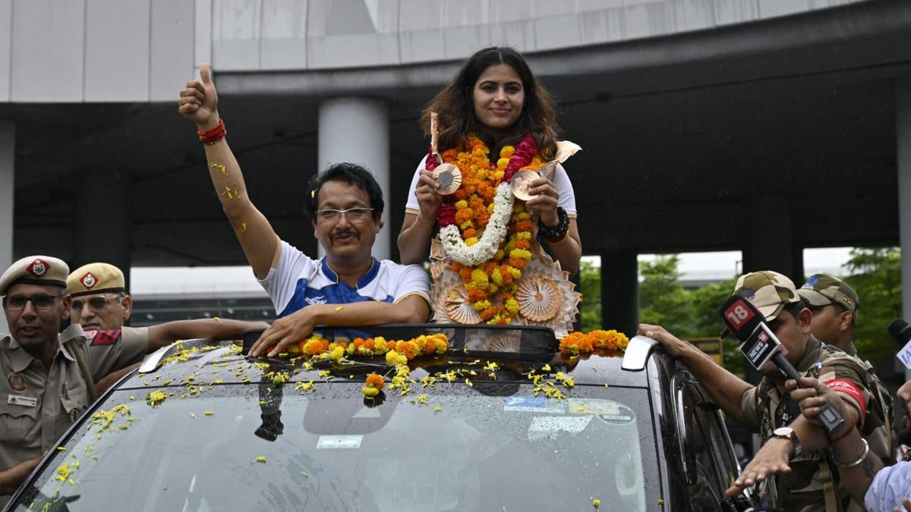

The hearing for Vinesh Phogat's appeal at the Court of Arbitration for Sports (CAS) is likely to begin around 9:30 am Paris time, which is around 1 pm IST on August 9 (Friday). The interim verdict can be expected about an hour later. This comes as a major shot in the arm for Vinesh Phogat and the Indian Olympic Association (IOA) as the CAS, in its early assessment on Thursday, saw merit in Vinesh's plea of demanding a joint silver medal in the women's 50kg wrestling and accepted it.

Vinesh was disqualified from the Paris Olympics 2024 hours before her gold-medal bout against Sarah Ann Hildebrandt of the USA. The Indian wrestler did not pass the weigh-in process and was found 100gm overweight. She was stripped of a podium finish despite ensuring at least a silver after becoming the first Indian female wrestler to enter an Olympic final.
Despite logging the second-best throw of his career to date, Tokyo 2020 champion Neeraj Chopra had to settle for the silver medal in the men’s javelin throw competition at the Paris 2024 Olympics on Thursday. Neeraj, despite not looking his best and logging just one valid throw of 89.45m in his six attempts in the final, managed to do just enough to finish behind Pakistan’s Arshad Nadeem, who won the gold medal with an Olympic record-shattering 92.97m attempt.

“It was a good throw but I’m not that happy with my performance today,” Neeraj expressed his disappointment after the event. “My technique and runway was not that good. (I managed) only one throw, the rest I fouled. “(For my) second throw I believed in myself to think I can also throw that far. But in javelin, if your run is not so good, you can’t throw very far,” added Neeraj, whose medal-winning throw came with his second attempt.
Star pistol shooter Manu Bhaker landed back in the country on Wednesday after her historic feat of winning two medals in a single edition of the Olympic Games and was welcomed by hundreds of supporters and her family, who braved a steady drizzle to give her a memorable reception here.
The Air India flight (AI 142), which brought Bhaker from Paris to Delhi, landed at the Indira Gandhi International Airport at around 9:20am, delayed by one hour. Hundreds of people, who waited at the airport long before her arrival despite the morning drizzle in the city, accorded her -- and her coach Jaspal Rana -- an enthusiastic reception. The 22-year-old Bhaker won a bronze each in the women's 10m air pistol and 10m air pistol mixed team event -- where she had paired with Sarabjot Singh -- to script Olympic history for the country.